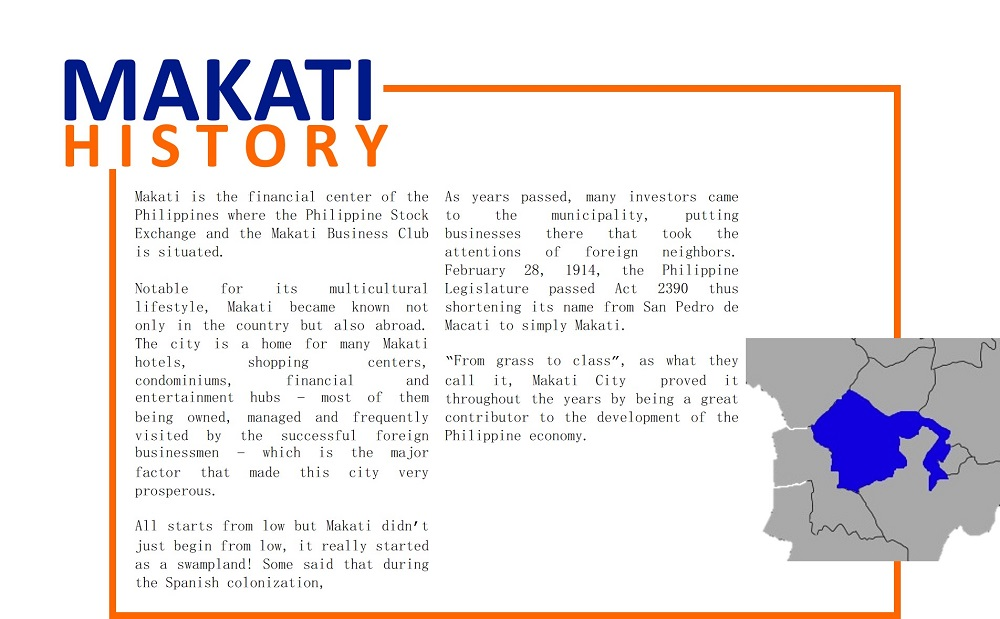

The fastest way to get to Makati is by MRT train. If you disembark at Ayala Station, you can walk to Glorietta and Greenbelt.
Other stations include Guadalupe, Buendia, and Magallenes. There are also buses coming from EDSA that will bring you to the city.
However, you should expect heavy traffic along the way.
Makati continues to attract lots of locals and tourists, and it shows no signs of slowing down. The mixture of different cultures
also adds to its charm. Now that you know what to do and where to go, take a trip to this huge metropolis now.